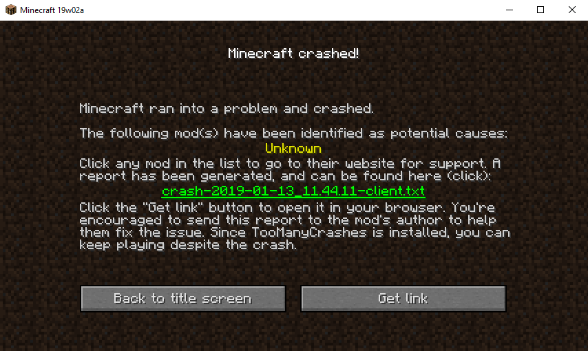

Mi Minecraft se cierra solo (Crash): Causas y soluciones

Pocas cosas causan tanto pánico como estar a punto de derrotar a un jefe o terminar tu casa, y que de pronto la ventana del juego desaparezca devolviéndote al escritorio de Windows. Los famosos "Crashes" (cierres inesperados) son habituales, pero siempre tienen una razón lógica.
Causa 1: Incompatibilidad de Mods (El problema #1)
El 90% de las veces que el juego ni siquiera logra abrir y se cierra durante la pantalla de carga de Mojang, se debe a que instalaste mods que no se llevan bien entre ellos, o peor, mods de versiones diferentes.
- La Solución: Revisa la carpeta "crash-reports". Abre el último archivo de texto generado; generalmente en la parte superior te dirá exactamente el nombre del mod que causó la explosión interna. Bórralo o actualízalo.
Causa 2: Versiones de Java Incorrectas
Como mencionamos en otro de nuestros artículos, si intentas abrir Minecraft 1.20 con el antiguo Java 8, el juego entrará en pánico y se cerrará de inmediato con un error de "Clase no encontrada" o "Versión incompatible".
Cómo LFZ Launcher previene esto
Si usas LFZ Launcher, este problema desaparece casi por completo. Nuestro sistema inteligente analiza la versión del juego que quieres iniciar y descarga automáticamente la versión de Java perfecta (Java 8, 17, 21 o 25) en un entorno seguro, garantizando que el motor de renderizado nunca falle por falta de librerías.
Causa 3: Drivers de la Tarjeta Gráfica Desactualizados
Si el juego se cierra al entrar a un mundo y te lanza un error de "OpenGL" o "Tesselating block model", significa que tu tarjeta gráfica no sabe cómo dibujar lo que el juego le pide. Asegúrate de actualizar tus drivers de NVIDIA, AMD o Intel a la última versión disponible.